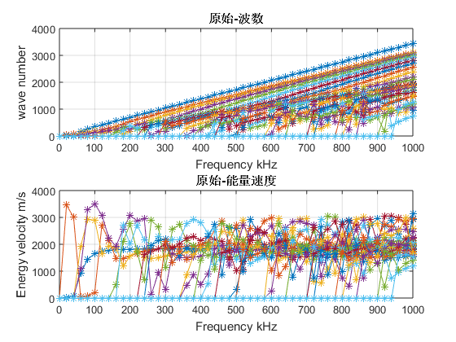
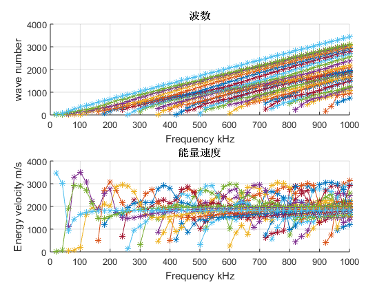

Contents
数据读取
clc,clear,close all
filename = 's06c20_f1000.mat';
load(filename);
数据预处理
Ev = Energy_Velocity_m_s;
wn = Real_Wavenumber_1_m;
n_mode = size(wn,1);
n_f = size(wn,2);
fk = Frequency_Hz'/1e3;
fkn = repmat(fk,1,n_mode);
figure
subplot(211)
plot(fkn,wn','-*')
tools.xyt({'Frequency kHz','wave number','原始-波数'})
subplot(212)
plot(fkn,Ev','-*')
tools.xyt({'Frequency kHz','Energy velocity m/s','原始-能量速度'})

模态匹配
[~,I] = sort(wn);
wn2 = fun_sort(wn,I)';
Ev2 = fun_sort(Ev,I)';
去除空数据，重新绘图
figure
subplot(211)
fun_plot0(fkn,wn2,'-*')
tools.xyt({'Frequency kHz','wave number','波数'})
subplot(212)
fun_plot0(fkn,Ev2,'-*')
tools.xyt({'Frequency kHz','Energy velocity m/s','能量速度'})
